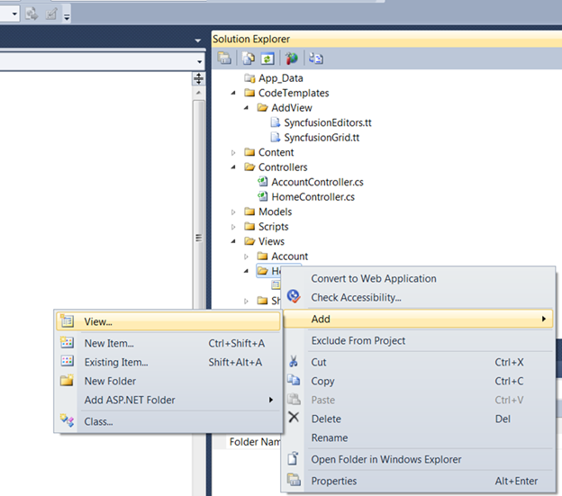
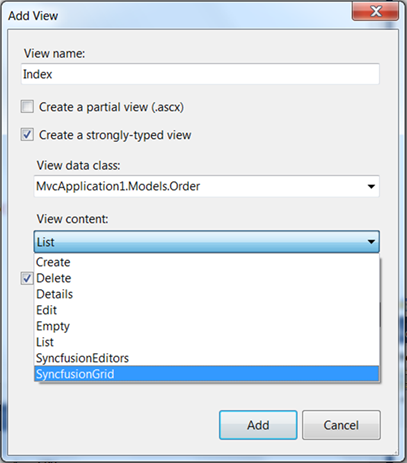
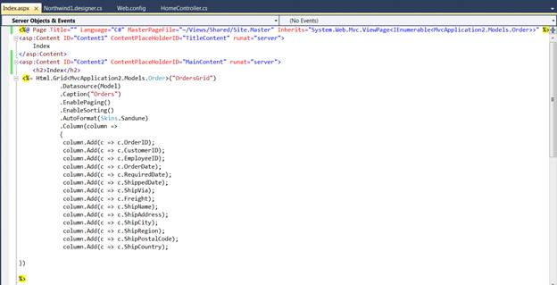
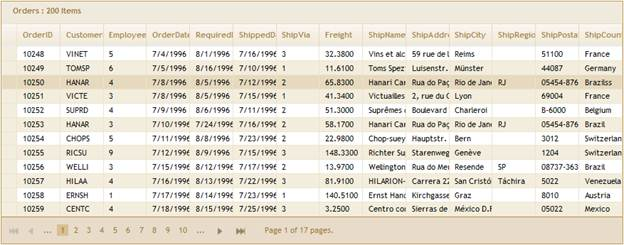

To create a Grid template using custom Syncfusion T4 templates, follow the steps below.
1. Open a new Grid MVC Project template which is fully configured for the Grid control. Refer to MVC Project Template for additional information.
2. In Project, right-click the Home folder and click Add followed by View. The image below illustrates this.

Figure 23: Adding View
3. Type a name for the view and select the Create a strongly-typed view check box. Select the model from the View Data Class drop-down list and then select the Grid template.
The following image illustrates how to select the Grid template.

Figure 24: Selecting Grid Template
4. In the Index.aspx file, all basic operations are enabled and all columns are mapped as shown below. It can be customized to enable or disable any feature.

Figure 25: Grid Rendered in View Page using Template
5. As soon as you run your project, the Grid will appear as shown below.

Figure 26: Grid Created using CodeTemplate
6. Refer to the Grid MVC UG for further information on customization.